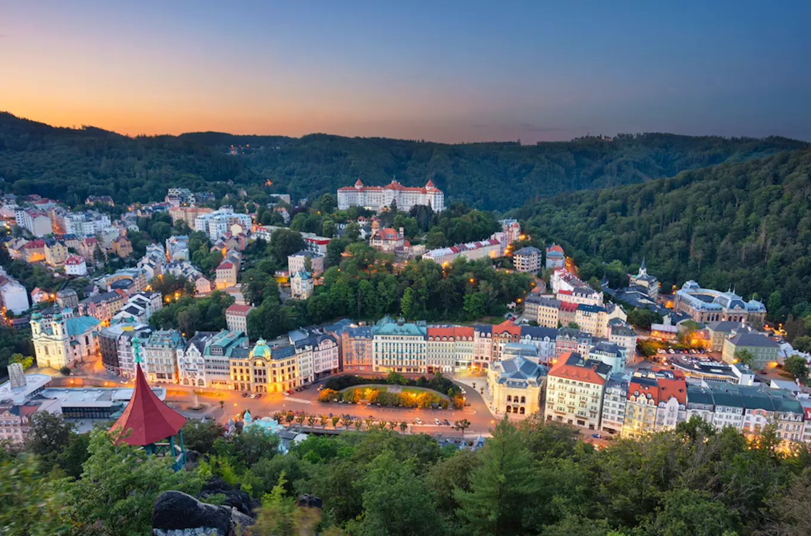
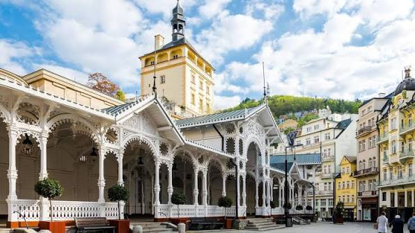
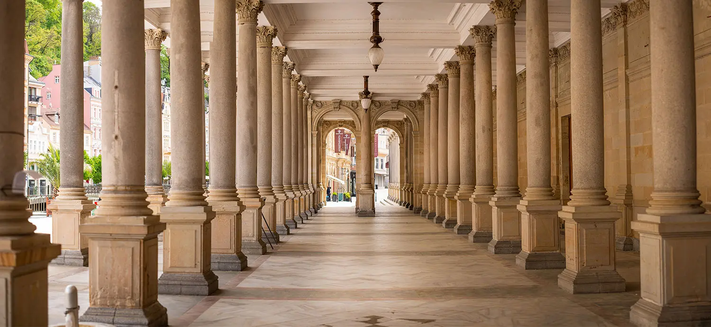
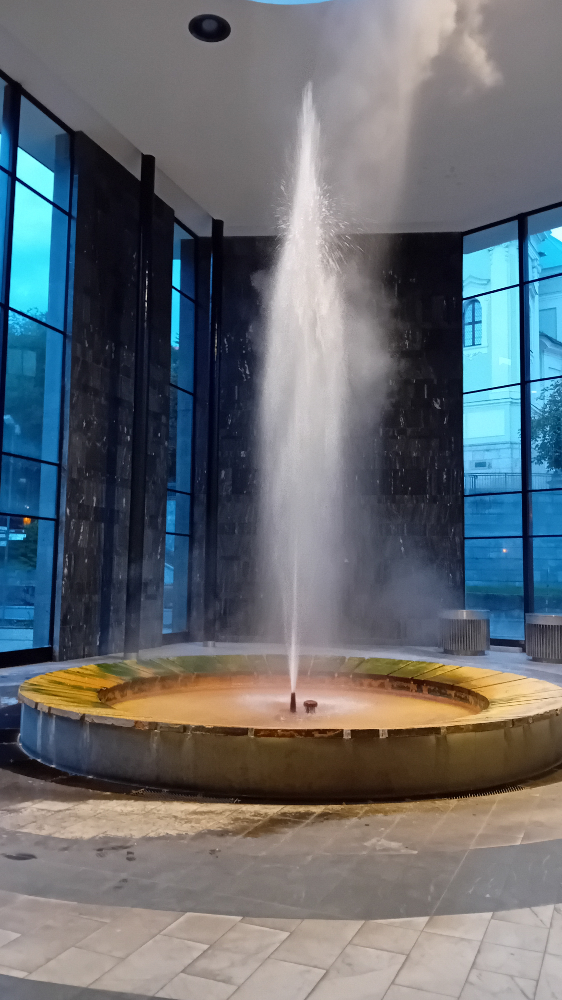

A famous spa town in western Czechia known for its elegant colonnades, mineral springs and beatiuful surroundings.
Karlovy Vary is one of the most famous spa towns in Czechia. Its historic centre is filled with elegant buildings, colourful facafes and peaceful collonades.
The town developed around its natural mineral springs, which have attracted visitors for centuries. Today, Karlovy Vary combines spa traditions with beautiful architecture and a unique atmosphere.

The Mill Colonnade is one of the most recognizable landmarks in Karlovy Vary. Its long Neo-Renaissance structure stretches along the river and is decorated with many columns and statues.
The colonnade is also home to several mineral springs. Visitors can walk through the building, taste the spring water and enjoy views of the historic centre.

The Hot Spring, known as Vřídlo, is the hottest and most famous mineral spring in Karlovy Vary. Its water rises from deep underground and has been an important part of the town's spa tradition for centuries.
Visitors can see the spring inside the Hot Spring Colonnade and try the mineral water from traditional spa cups.

Karlovy Vary offers much more than its famous springs. Visitors can explore the historic collonades, walk along the Teplá River and discover viewpoints in the hills surrounding the town.
The combination of spa architecture, natural surroundings and historic streets makes Karlovy Vary a unique destination to explore on foot.